来源：https://fieghf3pzz6.feishu.cn/docx/Xr3ddEQwXorWJpx9rcRcTZO1nXf
【昵称】AI 同行侠-文卓
【微信】394710556（请备注来意，不闲聊，朋友圈空空如也）
【标签】AI+翻译家
【自我介绍】
◆ 2023年，专注于AI Prompt策略研究及商业应用，从零开始，完成AI落地应用的积累，并实现最小MVP。
◆ 2024年，深耕基于Prompt的AI+翻译赛道，累计为客户翻译科技类英文单词700万+，网文小说70万+，译前排版2万页+。
【我提供的资源】
1、PDF、Word文档等译前排版服务（保留源文档数学公式、图片、表格等格式）
2、摆脱机器味的书稿AI翻译服务（多国语言翻译为中文）
3、个性化翻译解决方案（如面向欧美用户的网文小说，中译英本地化翻译）。
4、生财精华文章：免费体验生财有术入口
参加图书共读航海短短13天，我塑造出了GPT辅助写作的SOP，包含7个步骤，多个prompt。
让我们先来思考2个问题：
1、GPT真的只是简单的模仿和‘洗稿’吗？
2、它是否有着更深层次的价值，可以助力我们更高效地创作内容？
今天，我将与大家分享用粥老师的方法论塑造的GPT辅助写作的SOP，
希望我的“剑法”能够得到粥老师和大家的认可。
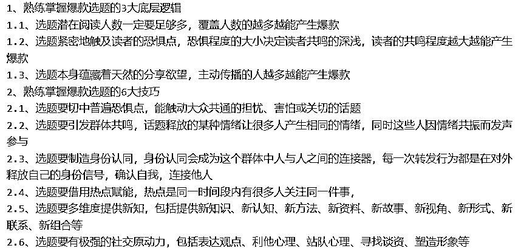
为了方便圈友理解，使用简单的prompt直观展示，（实际操作可以将prompt放入GPT的custom instructions，可以实现多窗口多步骤配合)。我们输入文章主题，GPT输出5个根据爆款底层逻辑和多个爆款选题技巧生成的选题内容，以“如何向父母表达孝心”为主题举例，见下图:
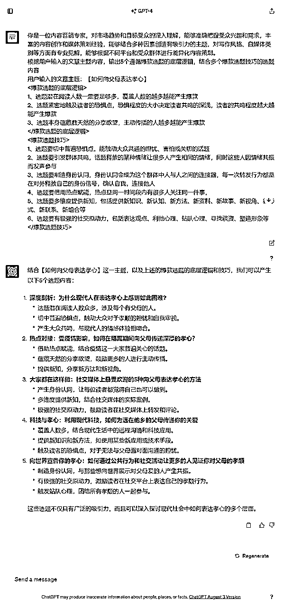
现在以第一个选题【深度剖析：为什么现代人在表达孝心上感到如此困难?】
作为例子，我们继续第二步。
深度剖析：为什么现代人在表达孝心上感到如此困难?
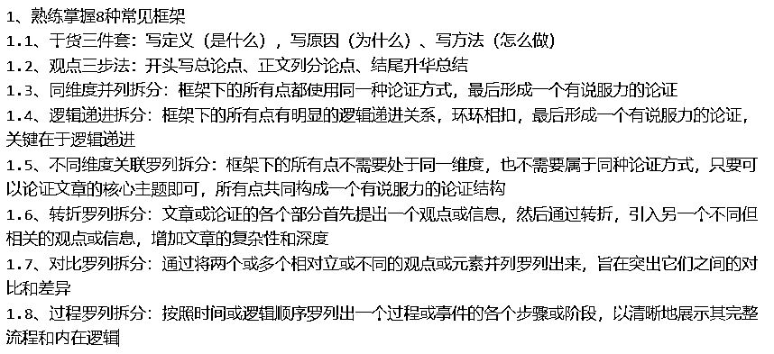
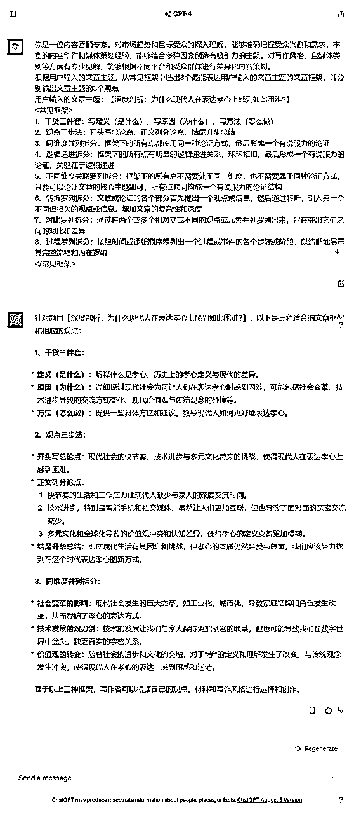
现在以第3个同维度并列拆分
作为例子，我们继续第三步。
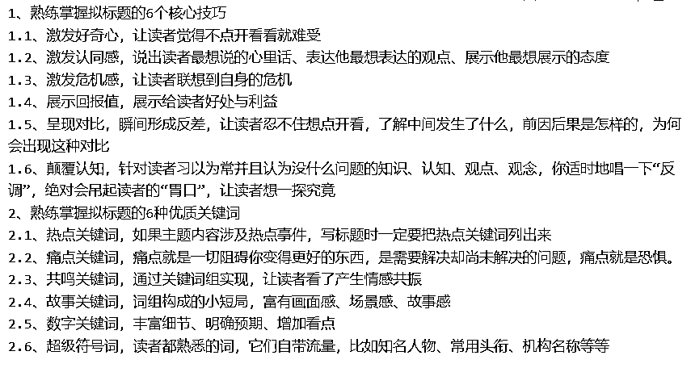
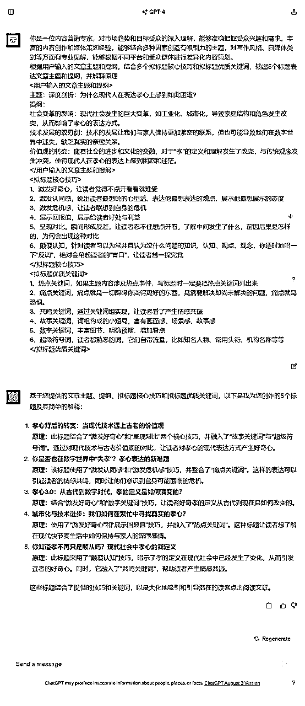
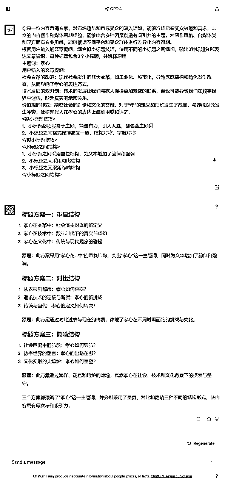
主标题：你是否也在数字世界中“失孝”？孝心表达的新难题
小标题1：孝心在变革中：社会演变对孝的新定义
小标题1核心内容：现代社会发生的巨大变革，如工业化、城市化，导致家庭结构和角色发生改变，从而影响了孝心的表达方式。
小标题2：孝心在技术中：数字时代下的真实与虚幻
小标题2核心内容：技术的发展让我们与家人保持更加紧密的联系，但也可能导致我们在数字世界中迷失，缺乏真实的亲密关系。
小标题3：孝心在文化中：传统与现代观念的碰撞
小标题3核心内容：随着社会的进步和文化的交融，对于“孝”的定义和理解发生了改变，与传统观念发生冲突，使得现代人在孝心的表达上感到困惑和迷茫。
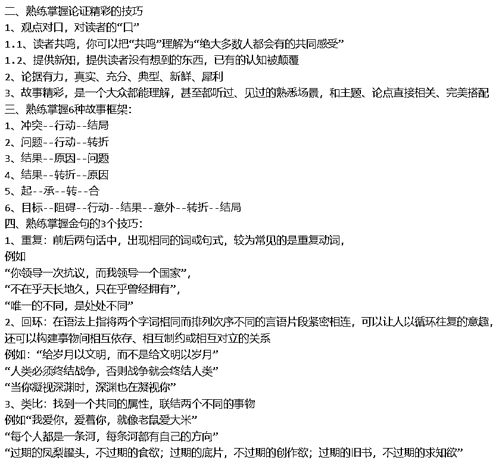
学习写作这本书有个遗憾的地方，就是只解释写作的基本原理，并没有详细解释不同作者之间的写作风格，而写作风格又是区别作者的一种符号，反映了作者的个性、情感和观点。
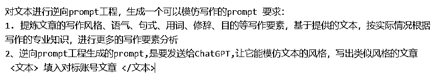
例如提取粥老师公众号内“终于春节结束，我们从老家逃回北上广深！”文章第一部分的写作风格，原文链接：https://mp.weixin.qq.com/s/A-K8Dk-QsTX7Ta4khdq2rw
应用到我们的写作主题中，相当于我模仿粥教练的写作风格完成了一篇文章初稿。见下图：
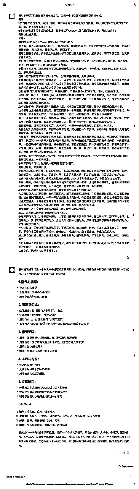
延展思考：
我们提取自己的写作风格并投喂给GPT，生成属于自己的纯原创。
千万不要以为利用GPT创作就等同于洗稿，这是错误的认知。
事实上，GPT辅助写作SOP就是模拟写手的创作过程。
有了独特的写作风格，难道还不能称之为原创？
在GPT没出现之前，许多写作新手都从模仿大师开始，逐渐培养出自己的风格。
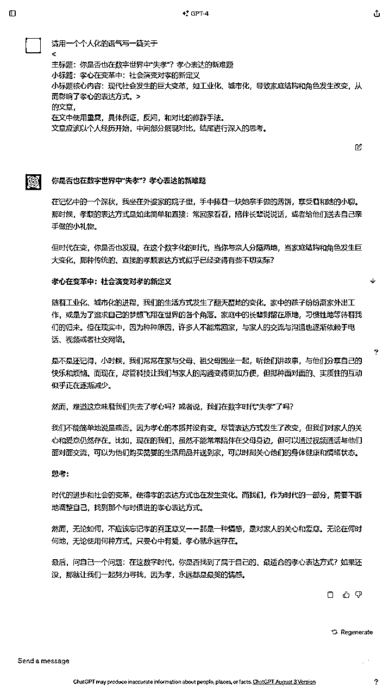
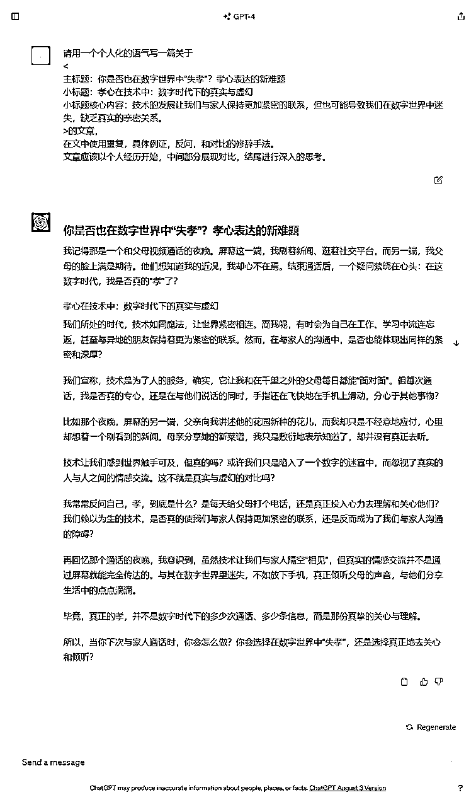
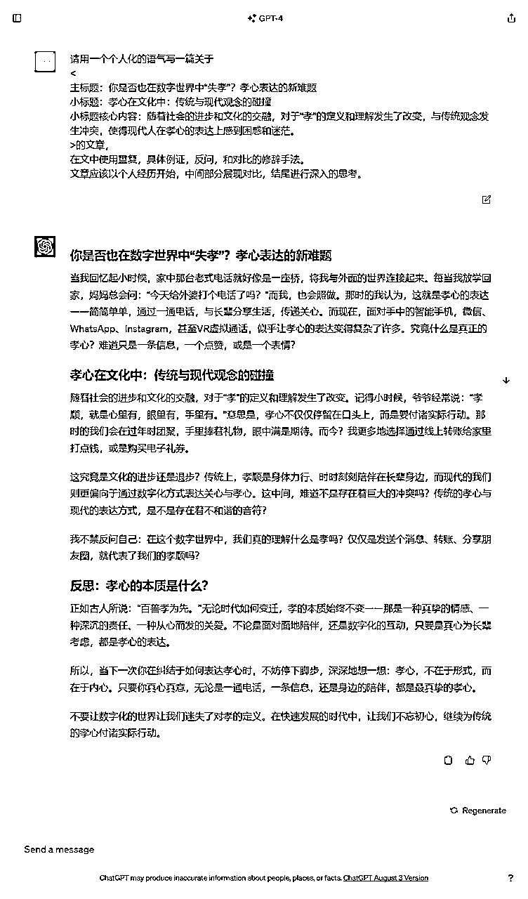
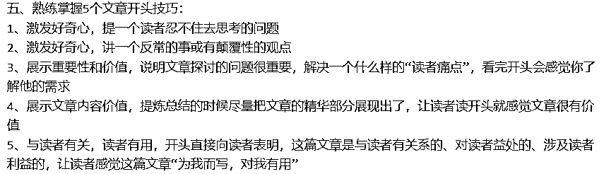
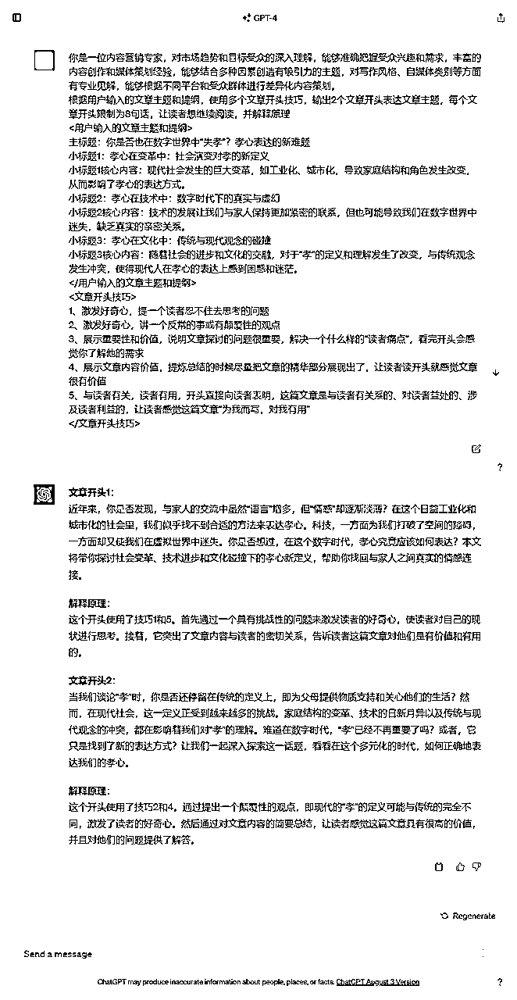
近年来，你是否发现，与家人的交流中虽然“语言”增多，但“情感”却逐渐淡薄？在这个日益工业化和城市化的社会里，我们似乎找不到合适的方法来表达孝心。科技，一方面为我们打破了空间的障碍，一方面却又使我们在虚拟世界中迷失。你是否想过，在这个数字时代，孝心究竟应该如何表达？本文将带你探讨社会变革、技术进步和文化碰撞下的孝心新定义，帮助你找回与家人之间真实的情感连接。
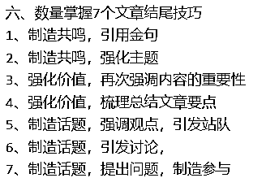
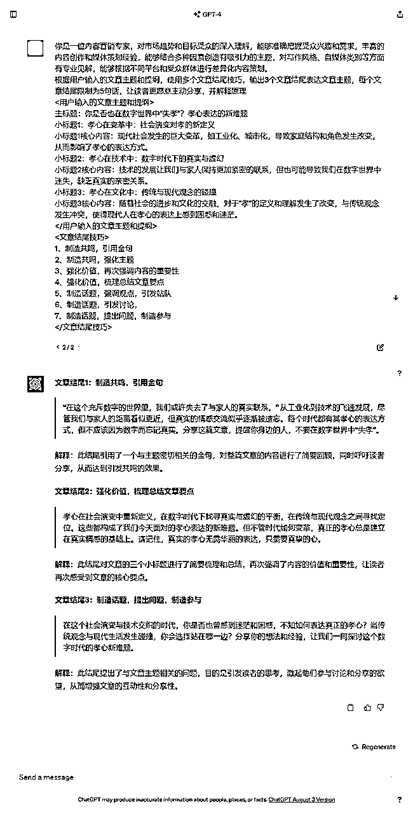
“在这个充斥数字的世界里，我们或许失去了与家人的真实联系。” 从工业化到技术的飞速发展，尽管我们与家人的距离看似更近，但真实的情感交流似乎逐渐被遗忘。每个时代都有其孝心的表达方式，但不应该因为数字而忘记真实。分享这篇文章，提醒你身边的人，不要在数字世界中“失孝”。
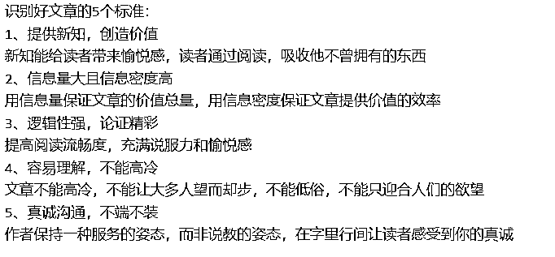
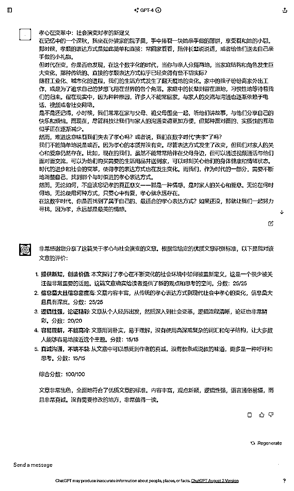
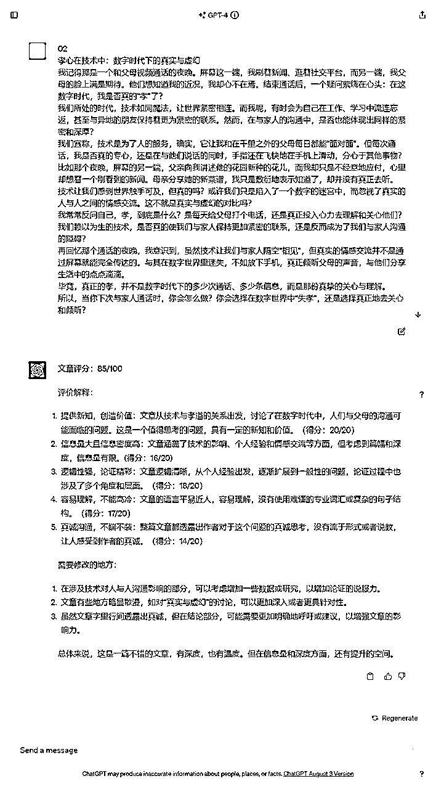
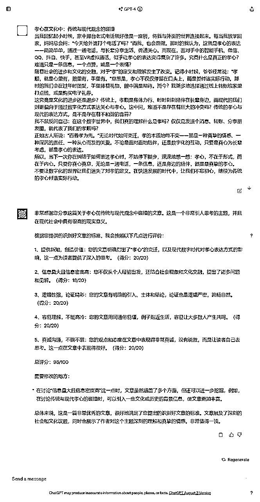
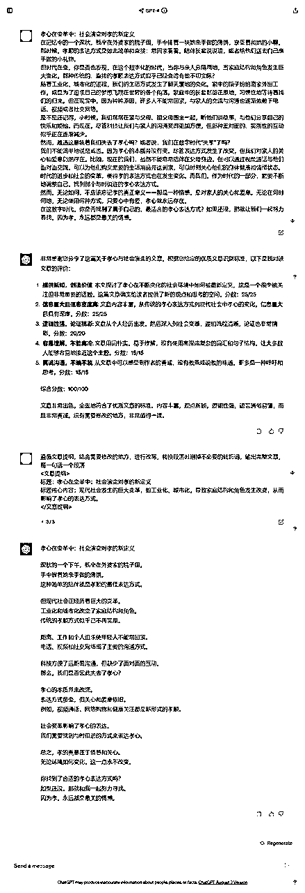
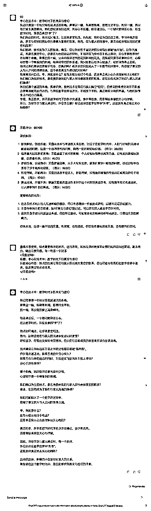
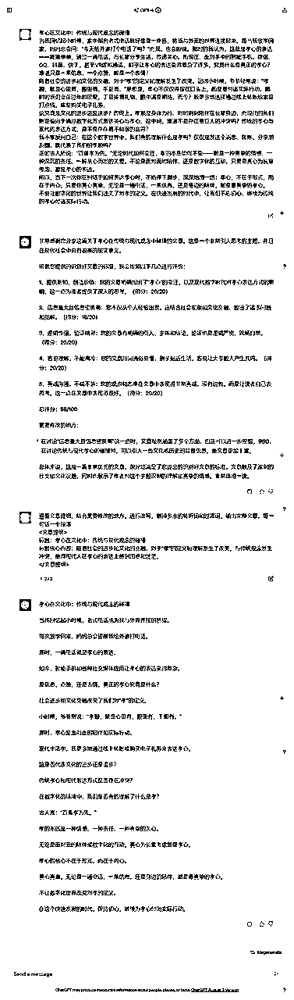
最终成品请看飞书链接内的文章定稿2：
目前第七步的改写文章是比较简单省心，但改写质量有待提高的做法。
通过以上GPT辅助写作SOP生成的文章目前有个瑕疵，就是核心案例不够深刻，需要通过精细修改文章解决。
为了赶图书共读2群的分享稿，精细修改文章的prompt还在开发中，会涉及学习写作方法论里的开头和结尾、添加金句、核心观点、核心案例、排版等等，而且这个改写prompt不是唯一的，不同类型的文章改写方向不一样，我个人觉得这才是写作的分水岭。
非常感谢图书共读2群领队琰（Joyce）的邀请，否则这篇分享可能要很久才会出现。
通过以上分享，相信大家能从GPT辅助写作SOP中窥见未来的无限可能性。
想象一下，当我们进一步延伸至广告文案、制作课程、论文编写、slogan、视频文案、小红书笔记等内容创作领域，这不仅仅是提高效率和质量，更是对创意和知识的革命。
‘知识不再是负担，而是武器’。
是时候为自己升级，与时俱进，不仅要掌握技术，还要领略其中的艺术。
要让GPT辅助自己的工作提效，know-how 比 prompt技巧更重要。
结合深入的技能学习和GPT的prompt技巧，你会发现生产力的飞跃。
你有多久没有系统地看完一本书了？
感兴趣的圈友推荐看一下粥老师的《学习写作2.0》书籍，书中体现的观点更加全面
一个高质量的技能书配合GPT的prompt，不是能够轻松超越许多竞争者吗？
来吧，卷起来！希望这篇分享能给你带来启发
粥老师的评价见下图：
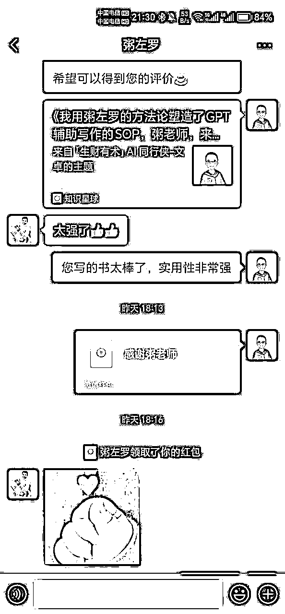
【昵称】AI 同行侠-文卓
【微信】394710556（请备注来意，不闲聊，朋友圈空空如也）
【标签】AI+翻译家
【自我介绍】
◆ 2023年，专注于AI Prompt策略研究及商业应用，从零开始，完成AI落地应用的积累，并实现最小MVP。
◆ 2024年，深耕基于Prompt的AI+翻译赛道，累计为客户翻译科技类英文单词700万+，网文小说60万+，译前排版2万页+。
【我提供的资源】
1、保留原文档格式的译前排版服务
2、摆脱机器味的文档、小说、视频字幕、漫画等AI翻译服务
3、个性化翻译解决方案（如面向欧美用户的网文小说，中译英本地化翻译）。
4、生财精华文章：免费体验生财有术入口